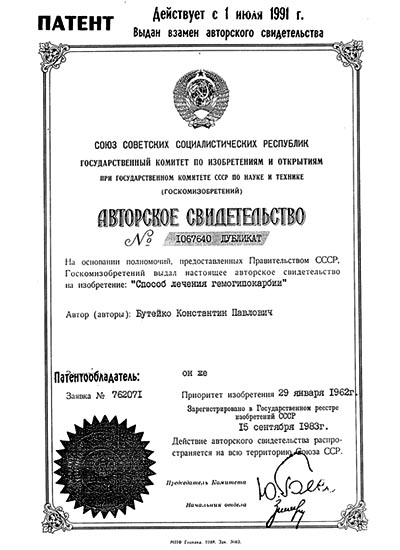
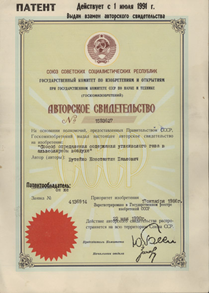

Документы о методе Бутейко
Официальные документы 1983–1990 годов о методе волевой ликвидации глубокого дыхания (ВЛГД) Константина Бутейко.
Важно. Это исторические документы. Они не заменяют консультацию врача и не обещают результата. Не отменяйте и не меняйте лекарства без врача.
Авторское свидетельство № 1067640 «Способ лечения гемогипокарбии»
Выдано Константину Павловичу Бутейко. Приоритет изобретения: 29 января 1962 года. Регистрация в Государственном реестре изобретений СССР: 15 сентября 1983 года.

Формула изобретения
Способ лечения гемогипокарбии, отличающийся тем, что, с целью сокращения сроков лечения, например, бронхиальной астмы, снижают вентиляцию легких в переносимом пациентом объеме,контролируют уровень углекислого газа в выдыхаемом воздухе и поддерживают скорость, его повышения не более 3-7 мм рт.ст. в день до уровня 45-55 мм рт.ст.
Полное описание изобретения на buteyko.ru
Авторское свидетельство № 1593627 «Способ определения содержания углекислого газа в альвеолярном воздухе»
Выдано Константину Павловичу Бутейко. Приоритет изобретения: 17 октября 1986 года. Регистрация в Государственном реестре изобретений СССР: 22 мая 1990 года.

Формула изобретения
Способ определения содержания углекислого газа в альвеолярном воздухе путем исследования показателей дыхательной системы, отличающиися тем, что, с целью упрощения при сохранении точности, пациенту после 5-10 мин отдыха измеряют по секундомеру время максимальной задержки дыхания после выдоха, а затем определяют содержание углекислого газа по формуле
P=P 0 +KT,
где P - процентное содержание СО 2 в альвеолярном воздухе; P 0 - 3,5 минимальное процентное значение СО 2 в альвеолярном воздухе; K=0,05 - коэффициент зависимости процентного содержания СО 2 от времени задержки дыхания; T - время максимальной задержки дыхания.
Полное описание изобретения на buteyko.ru
Приказ Минздрава СССР № 591 от 30 апреля 1985 года
Приказ поручал продолжить изучение метода и внедрять его при бронхиальной астме. Речь идёт о комплексной терапии вместе с лекарствами и физиотерапией.
Текст приказа
МИНИСТЕРСТВО ЗДРАВООХРАНЕНИЯ СССР ПРИКАЗ 30 апреля 1985 г. N 591 Москва О МЕРОПРИЯТИЯХ ПО ВНЕДРЕНИЮ МЕТОДА ВОЛЕВОЙ РЕГУЛЯЦИИ ГЛУБИНЫ ДЫХАНИЯ ПРИ ЛЕЧЕНИИ БРОНХИАЛЬНОЙ АСТМЫ
В последние годы для лечения больных бронхиальной астмой стали более широко применяться методы немедикаментозной терапии. Исследованиями, проведенными рядом научно-исследовательских институтов, установлена эффективность модифицированного метода волевого уменьшения глубины дыхания (авторское свидетельство на изобретение К.П. Бутейко N 1067640 от 15 сентября 1983 г. "Способ лечения гемогипокарбии") при лечении бронхиальной астмы у детей и взрослых в комплексной терапии с медикаментозными и физиотерапевтическими методами.
В целях дальнейшей разработки методов немедикаментозного лечения бронхиальной астмы и внедрения метода волевой регуляции глубины дыхания при лечении бронхиальной астмы приказываю:
1. 1-му Московскому медицинскому институту имени И.С. Сеченова Минздрава СССР (тов. Петров В.И.) продолжить изучение метода волевого уменьшения глубины дыхания при лечении детей и подростков, больных бронхиальной астмой, разработать инструкцию для врачей и до 1 декабря 1985 г. представить в Минздрав СССР для рассмотрения в установленном порядке.
2. ЦНИИ туберкулеза Минздрава СССР (тов. Хоменко А.Г.), ВНИИ пульмонологии Минздрава СССР (тов. Путов Н.М.), МНИИ туберкулеза Минздрава РСФСР (тов. Приймак А.А.) провести в течение 1985 г. изучение метода волевого уменьшения глубины дыхания при лечении взрослых больных бронхиальной астмой, разработать методические рекомендации и до 1 января 1986 г. представить их в Минздрав СССР для рассмотрения в установленном порядке.
3. Институту физиологии и патологии дыхания Сибирского отделения АМН СССР (тов. Луценко М. Т.), Институту клинической и экспериментальной медицины Сибирского отделения АМН СССР (тов. Казначеев В.П.), Институту терапии Сибирского отделения АМН СССР (тов. Никитин Ю. П.) провести в течение 1985-1986 гг. изучение метода волевого уменьшения глубины дыхания у больных, имеющих различные виды патологии внутренних органов, разработать методические рекомендации по применению этого способа лечения и до 1 декабря 1987 г. представить их в Минздрав СССР для рассмотрения в установленном порядке.
4. Ученому медицинскому совету Минздрава СССР (тов. Гаврилов O.К.) совместно с Главным управлением лечебно-профилактической помощи детям и матерям Минздрава СССР (тов. Гребешева И.И.) и Главным управлением лечебно-профилактической помощи Минздрава СССР (тов. Москвичев А.М.) в декабре 1986 г. провести научно-практическую конференцию "Немедикаментозные методы лечения больных бронхиальной астмой".
5. Сибирскому отделению АМН СССР (тов. Бородин Ю.И.) до 15 июня 1985 г. представить в Министерство здравоохранения РСФСР заявку на получение дополнительных ассигнований для создания научной группы с функцией научно-методического центра по дальнейшему изучению способа волевого уменьшения глубины дыхания и применению его при различных видах патологии.
6. 1-му Московскому медицинскому институту имени И.М. Сеченова Минздрава СССР (тов. Петров В.И.) до 1 июня 1985 г. представить в Министерство здравоохранения СССР заявку на получение кафедрой лечебной физкультуры (проф. Силуянова В.А.) дополнительных ассигнований для проведения научно-исследовательских работ по дальнейшему изучению способа волевого уменьшения глубины дыхания.
7. Председателю Координационного совета общесоюзной научно-технической программы 0.69.08 (тов. Хоменко А.Г.) до 1 июня 1985 г. включить в программу дополнительную тематику на 12-ю пятилетку по исследованию немедикаментозных методов лечения больных бронхиальной астмой с применением метода волевого уменьшения глубины дыхания.
8. Контроль за выполнением настоящего приказа возложить на Ученый медицинский совет Минздрава СССР (тов. Гаврилов О.К.), Главное управление лечебно-профилактической помощи детям и матерям Минздрава СССР (тов. Гребешева И.И.) и Главное управление лечебно-профилактической помощи Минздрава СССР (тов. Москвичев А.М.).
Министр С. Буренков
Акт апробации метода у пострадавших от аварии на Чернобыльской АЭС, 1990 год
Всесоюзный научный центр радиационной медицины АМН СССР, 50 пациентов. Контрольная группа в акте не описана, поэтому его выводы остаются наблюдениями того времени и не доказывают эффект.
О лекарствах. В акте говорится о снижении и отмене лекарственной терапии. Самостоятельно этого делать нельзя: такие решения принимает только лечащий врач.
Текст акта
ОРДЕНА ЛЕНИНА АКАДЕМИЯ МЕДИЦИНСКИХ НАУК СССР ВСЕСОЮЗНЫЙ НАУЧНЫЙ ЦЕНТР РАДИАЦИОННОЙ МЕДИЦИНЫ АКТ апробации метода ВЛГД по К.П. Бутейко по договору от 3.01.90 г. с к.м.н. Бутейко К.П. о творческом содружестве между ВНЦРМ АМН СССР и лечебно-оздоровительным центом "Дыхание по Бутейко" на 1990 год
Проведено лечение методом ВЛГД в отделениях института клинической радиологии ВНЦРМ АМН СССР, в отделении лучевой патологии Шевченковского ЦРКБ г.Киева на 50 больных с целью: исследовать клинико-патофизиологические механизмы дыхания по Бутейко в группе лиц, подвергшихся воздействию ионизирующей радиации в связи с аварией на ЧАЭС.
Получены следующие результаты: у 82% из числа пролеченных больных наступило улучшение гемодинамических показателей, анализов крови и состояние пищеварительной системы. На основании изучения истории болезни и дневников больных можно сделать следующие выводы:
1. Применение метода ВЛГД позволяет снизить количество применяемых медикаментозных препаратов, а в отдельных случаях полностью прекратить лекарственную терапию.
2. Метод ВЛГД в комплексном лечении способствует улучшению показателей крови и некоторых показателей гемодинамики: АД, пульс.
3. Метод ВЛГД как один из общеукрепляющих методов нетрадиционной медицины не дает осложнений и побочного действия.
4. В дальнейшем следует рекомендовать метод ВЛГД в комплексе немедикаментозного лечения лиц пострадавших в следствии аварии на ЧАЭС, как один из методов реабилитации.
Директор института клинической радиологии, проф. В.Г. Бебешко
Ст. н. сотрудник От. неврологии А.Б. Денисюк
Тексты и изображения документов приведены по сайту buteyko.ru. Тексты приведены как в источнике.